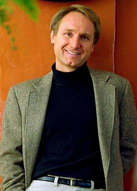

Дэн Браун родился 22 июня 1964 года в Нью-Гемпшире(США), отец его был профессором математики, а мать -
профессиональным музыкантом. Дэн рос в окружении парадоксов науки и религии.
Дэн окончил академию Филипс-Экзетор Амхерст-колледж, затем отправился в Калифорнию, где начал свою карьеру как
автор песен, музыкант и исполнитель, выпустил несколько компакт-дисков (CD) со своими записями.
В 1993 году
Дэн Браун вернулся в Нью-Гемпшир и стал преподовать английский язык в Амхерст-колледже.
В 1998 году писатель, которого всегда интересовали философия, история религии, криптография и тайные организации, опубликовал свой первый роман-триллер — "Цифровая крепость"("Digital Fortress"), который быстро стал бестселлером среди пользователей Интернета.
Код да Винчи
История всегда пишется победителями. И когда происходит столкновение двух культур, проигравший как бы вычеркивается, а победитель начинает писать новые книги по истории, книги, прославляющие его деяния и унижающие побежденного противника. Как однажды сказал Наполеон:"Что есть история, как не басня, в которую договорились поверить?" В силу своей природы - это всегда односторонняя оценка событий.
| Год | Название фильма |
|---|---|
| 2005 | Ангелы и демоны: Иллюминаты (ТВ) (документальный фильм) |
| 2006 | Код да Винчи |
| 2009 | Ангелы и демоны |
| 2016 | Инферно |
| 2016 | Утраченный символ |